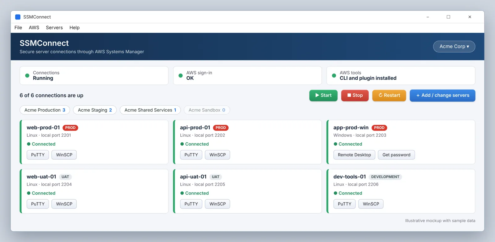

Connect to your AWS servers over SSM. Leave port 22 closed.
SSMConnect finds your EC2 servers and opens secure tunnels through AWS Systems Manager Session Manager. On Windows it sets up PuTTY, WinSCP, MobaXterm and Remote Desktop for you. On Linux it gives every server a window with a Connect button and a short ssh name. You sign in, pick a server and connect. No bastion host, no VPN, no commands to remember.
- Windows 10 or later, 64-bit
- Linux 1.0 with signed downloads
- .bin, .rpm and .deb
- Apache-2.0

The same connection, with and without the typing
Reaching a server over Session Manager by hand means a long command, a local port to remember and a manual session in your SSH client. SSMConnect runs that command for you and saves the result as a session you can reopen.
$ aws sso login --profile prod $ aws ssm start-session \ --target i-0a1b2c3d4e5f67890 \ --document-name AWS-StartPortForwardingSession \ --parameters '{"portNumber":["22"],"localPortNumber":["2222"]}' \ --profile prod # then: PuTTY, host 127.0.0.1, port 2222, key file...
Windows click Connect, PuTTY opens Linux click Connect, then Terminal or $ ssh ssc-web-prod
The tunnel, the local port and the saved session or ssh name are handled for you.
How it works
Sign in
Click Sign in. Your browser opens your company sign-in page (AWS IAM Identity Center), or you can use access keys. A small status line shows which accounts are signed in.
Find your servers
SSMConnect scans your accounts and lists the servers that are ready for Session Manager. A server that is not ready is flagged with a plain explanation of what is missing.
Connect
Press Connect. A tunnel opens on your own computer and your tool starts. On Windows that is PuTTY for SSH, WinSCP or MobaXterm for files and Remote Desktop for Windows servers. On Linux the Terminal button opens ssh, Files opens the server in your file manager over SFTP, and Remote Desktop uses Remmina or FreeRDP.
What your server needs
SSMConnect removes the typing. It does not change how Systems Manager works, so the server has to be ready for it.
On the server
- The SSM Agent installed and running (it comes with many current Amazon Linux, Ubuntu and Windows Server images)
- An IAM instance profile that allows Systems Manager, for example
AmazonSSMManagedInstanceCore - Outbound HTTPS to the Systems Manager endpoints, over the internet or through VPC endpoints
For you
- An AWS identity that can list instances and start sessions (
ec2:DescribeInstances,ssm:DescribeInstanceInformation,ssm:StartSession) - The AWS CLI and the Session Manager plugin. SSMConnect installs them if they are missing
- On Windows, PuTTY, WinSCP or MobaXterm if you want saved sessions in them
- On Linux, the OpenSSH client, and Remmina or FreeRDP for Windows servers
Why use Session Manager instead of a bastion or VPN
| Bastion host | VPN | SSMConnect with Session Manager | |
|---|---|---|---|
| Inbound port 22 or 3389 | Open to the bastion | Open inside the VPN | Closed |
| Extra server to patch and pay for | Yes | Usually | No |
| SSH keys to hand out | Yes | Yes | Your AWS sign-in controls access |
| Who connected is recorded | Only if you build it | Only if you build it | Through AWS CloudTrail and Session Manager logging, when enabled |
Installing on Linux
Pick whichever fits your distribution. All three install the same app, and each has an OpenPGP signature you can check.
Any distribution
Download the .bin installer and run sh ./ssmconnect-linux-x86_64.bin (or double-click it). A short wizard fetches what is missing and keeps your servers and settings when you update.
Built to be safe by default
- Tunnels listen on 127.0.0.1 only and never start on a port that is already in use
- Every value passed to the AWS CLI is validated, and the CLI is started with an argument list, never a command string
- No password or key is stored by SSMConnect
- Nothing runs as administrator
- Updates are checked against a published SHA-256 checksum, and on Linux against an OpenPGP signature as well
- The code is public under the Apache License 2.0 and there is a private way to report a vulnerability
Questions people ask
What is SSMConnect?
SSMConnect is a free, open-source desktop app for Windows and Linux. It finds your EC2 servers, opens secure tunnels through AWS Systems Manager Session Manager, and makes each server one click away. On Windows it sets up PuTTY, WinSCP, MobaXterm and Remote Desktop. On Linux it gives every server a short ssh name and opens your terminal, file manager and Remote Desktop client.
Do I need to open port 22 or give my server a public IP?
No. The tunnel runs through AWS Systems Manager, so the server needs no inbound SSH or RDP rule and no public address. The server does need the SSM Agent running, an IAM instance profile that allows Systems Manager, and outbound HTTPS to the Systems Manager endpoints.
Does it work with PuTTY, WinSCP and MobaXterm?
Yes, on Windows. SSMConnect saves a ready-to-use session for each server in the tools you have installed. It keeps a backup of the files it edits and leaves your own saved sessions alone.
Does the Linux version have a window with a Connect button?
Yes. The Linux edition is a native desktop app with the same dashboard as Windows: a card for each server with a live status, Connect, Terminal, Files and Remote Desktop buttons, and Start, Stop and Restart for all connections. It also works from any terminal, because every server gets a short name such as ssh ssc-web-prod, so scp, rsync and VS Code Remote-SSH work too.
How do I install it on Linux, and is the download signed?
Download the .bin installer and run it, or install the .rpm (Fedora, RHEL 10 and clones, openSUSE) or the .deb (Debian 13, Ubuntu 24.04, Mint 22). The .rpm and .deb also add a signed update repository, so new versions arrive with dnf upgrade or apt upgrade. Every Linux download has an OpenPGP signature that you can check against the published key fingerprint.
Can I reach Windows servers with Remote Desktop?
Yes. SSMConnect opens a tunnel to the server's Remote Desktop port and launches the Remote Desktop client (Remmina or FreeRDP on Linux). A Windows password you copy stays on the clipboard for 60 seconds and is then cleared.
How do I sign in to AWS?
Use your company sign-in page (AWS IAM Identity Center, also called AWS SSO) with one click, or use access keys. If your browser has to sign in, SSMConnect opens it for you.
Is SSMConnect safe to use?
Tunnels listen on 127.0.0.1 only, so other computers on your network cannot reach them. Every value passed to the AWS CLI is validated, no password or key is stored, nothing runs as administrator, and updates are checked against a published SHA-256 checksum. The Windows installer is not code-signed yet, so Windows SmartScreen may show a warning the first time. Linux downloads carry OpenPGP signatures.
Does it replace the AWS CLI?
No. SSMConnect uses the AWS CLI and the Session Manager plugin underneath and installs them for you if they are missing. It saves you from typing the commands and remembering the ports.
Which systems does it run on?
Windows 10 or later (64-bit), and 64-bit Linux desktops with GTK 4.12 and libadwaita 1.5 or newer, such as Ubuntu 24.04, Fedora 40 and Debian 13. Wayland and X11 both work.
What does it cost?
Nothing. SSMConnect is released under the Apache License 2.0. If it helps you, you can optionally support the project through GitHub Sponsors.
Try it on a test server first
The Windows app is an early release and the Linux app is at version 1.0, so start with a non-production server either way. It takes a few minutes to install and sign in. If something is confusing, tell me and I will make it clearer.